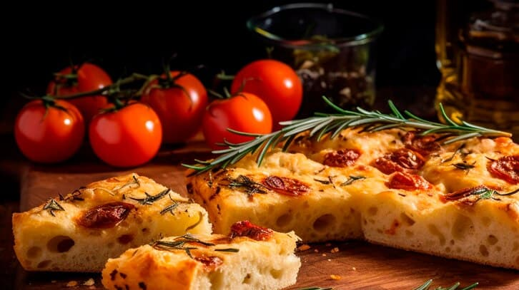

Focaccio

Description
This warm and comforting cinnamon roll focaccia is a beautiful cross of
baked goods, and a store-bought short-cut helps it come together in no
time.
Ingredients
- 1/4 cup, plus 1 tablespoon canola oil, divided
- 2 (1-pound) fresh prepared pizza dough balls
- 2 teaspoons ground cinnamon, divided
- 7 tablespoons unsalted butter, softened, divided
- 4 ounces cream cheese, at room temperature
Steps
-
Gather all ingredients. Evenly coat a 13- x 9-inch baking pan with 1/4
cup of the oil.
-
On a lightly floured work surface, using your hands or a rolling pin,
press dough balls into about 1-inch thickness.
-
Place dough in the prepared pan, cover with plastic wrap, and let rest
in a warm place for 3 hours, removing plastic every hour and gently
pressing out dough as thin as possible.
- Preheat the oven to 450 degrees F (230 degrees C).
- Drizzle icing over hot bread; serve warm.